電腦環境設置與Python安裝#
本篇教學如何利用 Anaconda 安裝Python、管理Python套件和環境，以及如何使用 Visual Studio Code (VS Code) 編寫程式。編寫Python程式的方法有很多，這裡示範的是筆者常用的方法，使用者可參考自己的需求而調整。
安裝Anaconda或Miniconda#
Anaconda 是常用的Python套件管理軟體，優點是擁有大量的Python套件，且容易安裝和學習。請先點選 Anaconda官方網站，選Get Started → Download Anaconda installers，然後安裝在電腦中。
若是Window使用者，在安裝期間請特別 要 留意勾選「Add Anaconda3 to my PATH environment variable」的選項，這樣稍後才能直接用一個指令來安裝所有我們需要的Python套件。
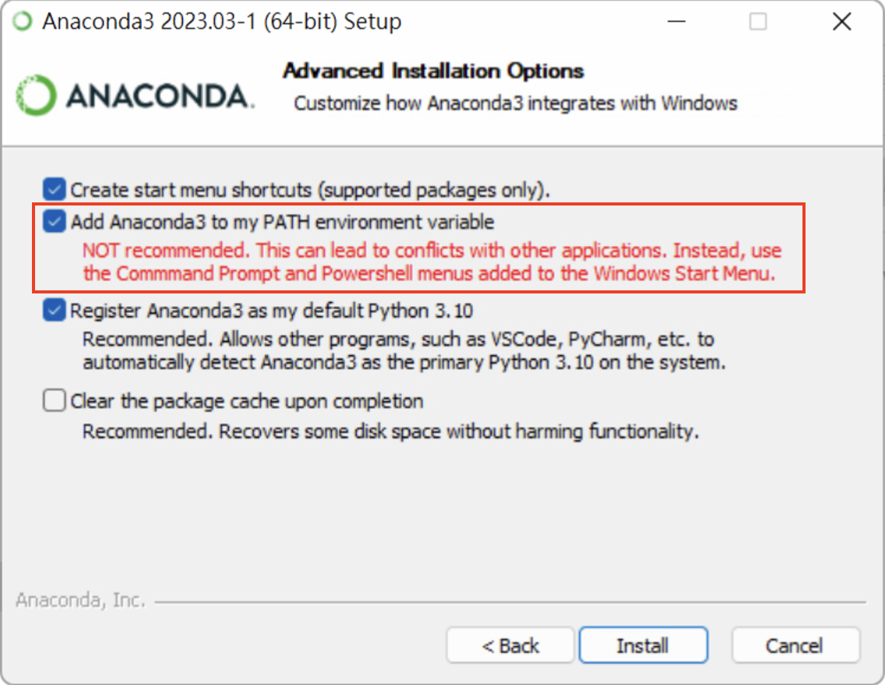
M2 Mac電腦不支援Anaconda，請改使用Miniconda (其他版本的Mac也可以用)。到 https://docs.conda.io/en/latest/miniconda.html 下載安裝檔的bash script，然後打開終端機，輸入
sh Miniconda3-latest-MacOSX-arm64.sh
出現
Do you wish the installer to initialize Miniconda3 by running conda init? [yes|no]
請打yes，最後就安裝完成了。
Note
Anaconda和Miniconda的差別在於有沒有圖形介面，基本上本次教學不太用到Anaconda圖形介面的功能，因此也可以用Miniconda代替。
安裝VS Code#
Visual Studio Code (簡稱VS Code) 是一款由微軟開發且跨平台的免費整合式開發環境。該軟體支援在本機上撰寫本機或遠端工作站的各式程式，支援程式碼上色、補齊等編輯功能，還內建終端機，能夠在VS Code上呼叫核心來執行本機或遠端的程式碼，是相當強大的開發工具。接下來將示範如何以VS Code安裝所需要的Python套件，以及撰寫程式，請點入Visual Studio Code官方網站下載並安裝VS Code。
下載後打開VS Code，點選「延伸模組」按鈕。
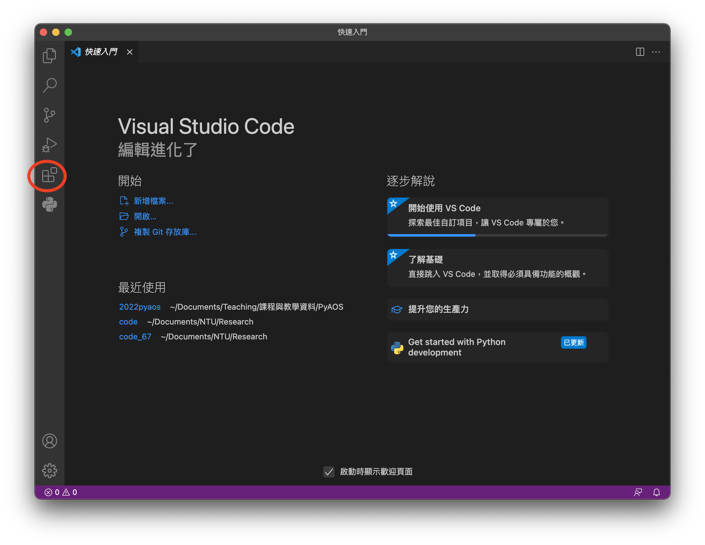
在搜尋欄輸入Python，選擇後按安裝。
按照相同的步驟，安裝Pylance、Jupyter，有需要的話也可以安裝「中文(繁體)」延伸模組，這樣VS Code的介面就會是繁體中文。
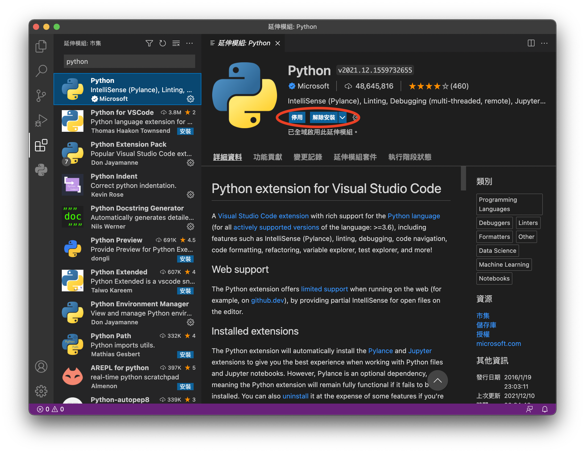
安裝PyAOS所需Python套件庫#
安裝好Anaconda後，請打開終端機。
Mac使用者：可以直接使用Mac內建終端機。這時會發現多了
(base)字樣，這是因為Anaconda會自動安裝一些基本套件，這個套件環境預設稱為base。然而Anaconda預設安裝好的base套件不能滿足我們進行PyAOS運算的環境，因此要額外安裝套件。接下來我們安裝PyAOS需要的套件，請將以下指令複製到終端機並執行：
conda create -n p3 -c conda-forge ipython numpy metpy scipy netCDF4 cfgrib matplotlib eofs cartopy nco cdo python-cdo xarray pandas seaborn cmaps scikit-learn jupyterlab dask windspharm bottleneck pip
Windows使用者：我們使用VS Code中的終端機功能安裝Python套件。請打開VS Code，在上方列選「終端機 -> 新增終端」。在終端機右側「+」號旁的選單，選取「Command Prompt」。 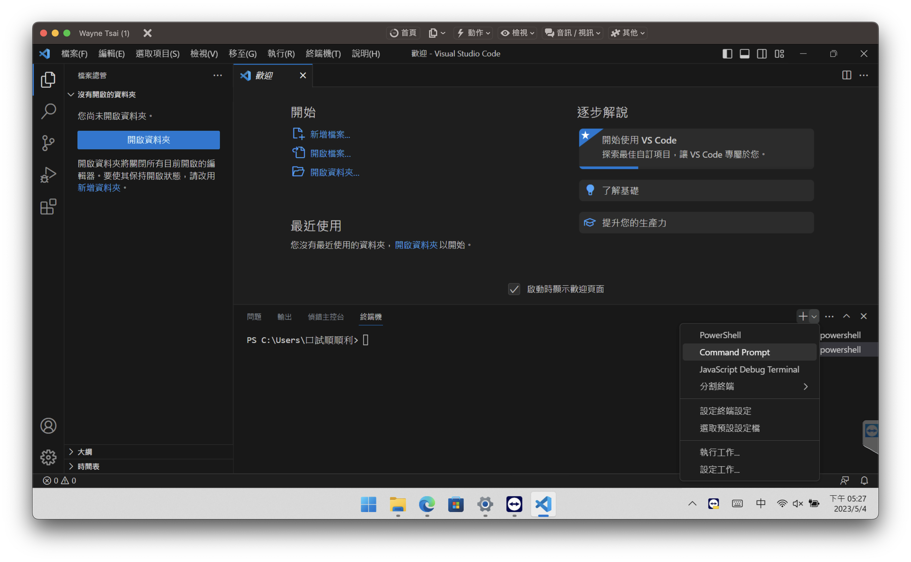 由於Windows環境能支援的Python套件有限，因此我們會安裝較少但必要的套件庫。請將以下指令複製貼上VS Code的終端機。
conda create -n p3 -c conda-forge ipython numpy metpy scipy netCDF4 matplotlib cartopy xarray pandas seaborn jupyterlab dask bottleneck pip
Caution
cdo、python-cdo未安裝會影響到第11單元，windspharm和eofs會影響到第七單元的一小部分， cmaps未安裝不影響畫圖功能唯不能選擇使用NCL的colormap。但這些套件可以另外用pip install安裝。
Note
p3是這個新的conda環境的名稱，也可以自己取新的名稱。
安裝成功後，再打開Anaconda軟體，選Environments → p3，就可以看到剛安裝好的環境了。
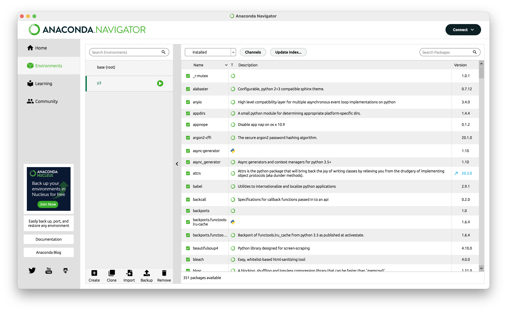
Note
安裝conda套件的過程可能需要花比較多時間，請耐心等候。
用Visual Studio Code撰寫程式#
撰寫Python程式，按照檔名可區分為
.py：屬於Python程式的scipt，也就是把完整的程式寫好了以後，由Python逐行執行。.ipynb：為Jupyter Notebook的格式，是互動式的程式介面，以窗格 (cell) 為單位，逐格執行Python程式。
而工具的部分也有很多種，
Vim editor: 在終端機直接用vim開啟一個新檔案，就可以編寫程式。例如：
vi test.py
Visual Studio Code (可以撰寫.py或.ipynb檔案)
Jupyter Notebook (撰寫.ipynb檔案，互動式介面)。Anaconda的Home可以直接呼叫Jupyter Notebook介面。
點選「檔案總管」按鈕，按「開啟資料夾」按鈕來選擇一個存放程式碼的資料夾位置，以後就可以在這裡寫程式。
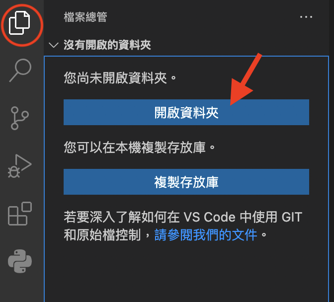
在檔案總管資料夾中，右鍵 (兩指點按) 並選擇「新增檔案」，或是在最上方選單列「檔案→新增檔案」。注意python的檔案要以.py作為副檔名，就可以撰寫程式了。
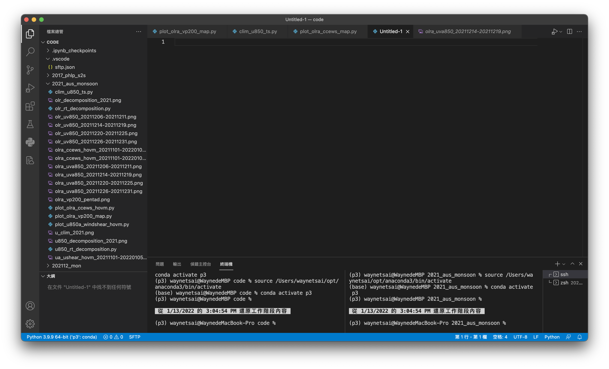
撰寫測試程式#
Example 1: 請用import將xarray套件輸入，並且印出xarray套件的版本資訊。
import xarray as xr
print('Xarray version: ' + xr.__version__)
Xarray version: 2023.3.0
在最上方選單列選「執行」→「啟動偵錯」，或是在左側選擇「執行與偵錯」選單，偵錯設定檔選擇「Python檔案」，在「選取核心」窗格點選剛剛安裝的conda環境「p3」，接著就會開始偵錯並執行了。

Jupyter Notebook#
Jupyter Notebook是在網頁上操作的Python互動性介面，可以開啟窗格 (cells) 寫筆記、註解、撰寫程式，程式也可以按照個人需求分段撰寫和執行。
在VS Code 工作資料夾下新增一個test.ipynb的檔案。注意Jupyter Notebook的副檔名為.ipynb。
請在VS Code中按「+程式碼」，然後撰寫跟剛剛一樣的測試程式，並且按儲存格 (Cell) 旁邊的「執行」按鈕。接著會跳出一個視窗，詢問ipynb檔案的核心，請選擇p3的核心，按一下就會開始執行了。
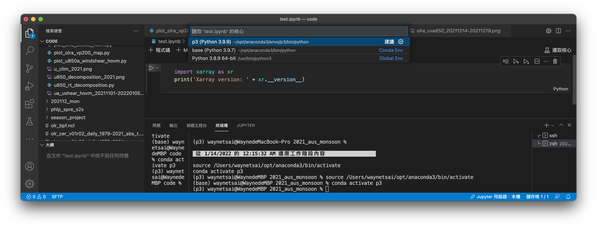
套件版本檢查#
為了避免版本不相容，因此在開始閱讀本文前，建議先檢查各個套件的版本。本章的Example 1就是Python檢查套件的版本的方式，版本是以__version__這個attribute中儲存，因此可以print出來檢查。
import xarray as xr
import numpy as np
import cartopy
print("Xarray version: " + xr.__version__)
print("Numpy version: " + np.__version__)
print("Cartopy version: " + cartopy.__version__)
Xarray version: 2023.3.0
Numpy version: 1.23.5
Cartopy version: 0.21.1
小結#
以上的方法都是幫助我們方便地撰寫和執行Python程式，當然還有很多不同的方法、執行工具，可以再探索和熟悉。現在，Python運算環境設置好，接著就可以開始學習用PyAOS寫程式了。
Windows使用者的語言設定#
(Mac使用者請略過此部分) 由於xarray在讀取檔案時，路徑不允許中文字，因此請調整以下設定：
Windows 11#
在開始工作列右方的日期與時間，右鍵點選「調整日期和時間」。
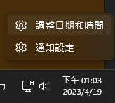選「與言與地區」。
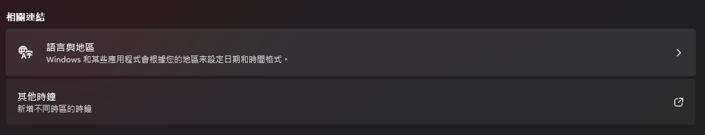選「系統管理語言設定」。
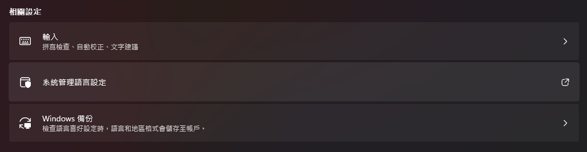選「變更系統地區設定」。
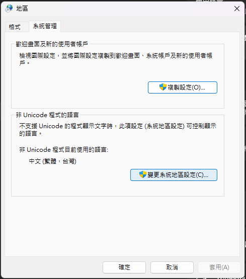勾選「Beta：使用 Unicode UTF-8 提供全球語言 支援」。
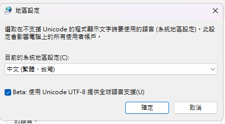
Windows 10#
步驟和Windows 11類似。
在開始工作列右方的日期與時間，右鍵點選「調整日期和時間」。
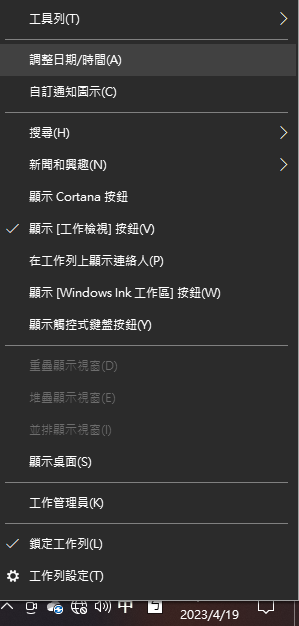在左側選單選「與言與地區」。
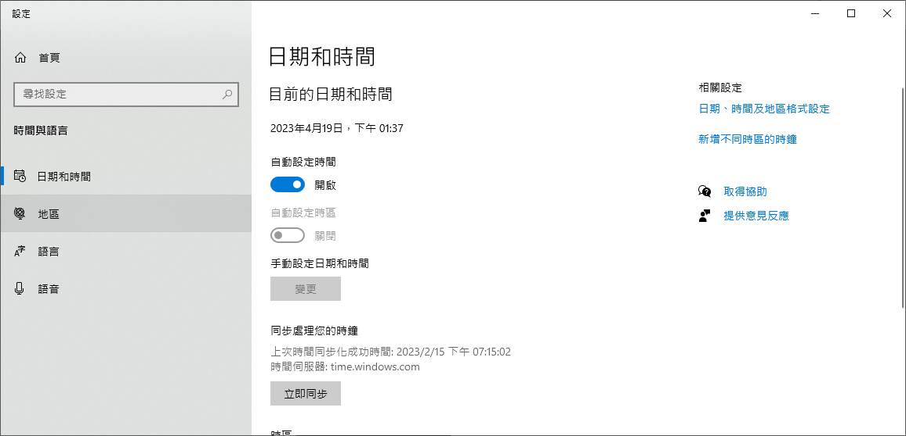選「其他日期、時間奥地區設定」。
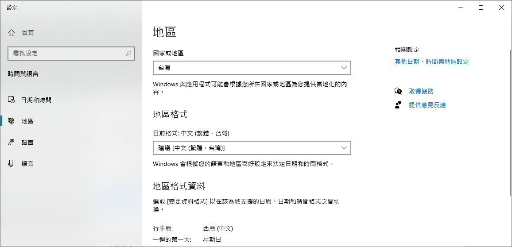選「地區→變更日期、時間數字格式」。
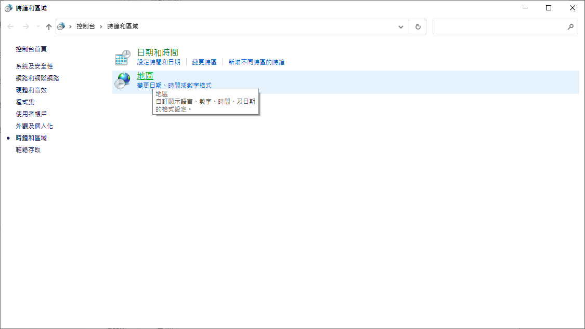選「系統管理」選單。
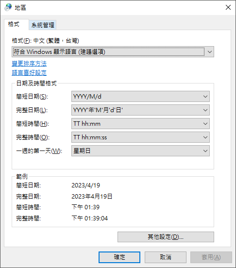選「變更系統地區設定」。
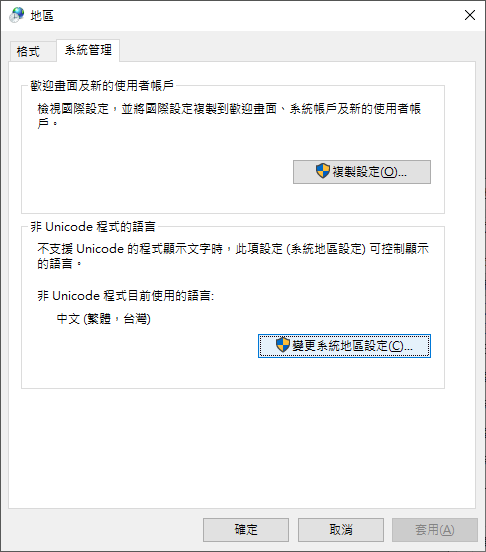勾選「Beta：使用 Unicode UTF-8 提供全球語言 支援」。
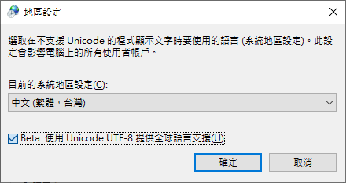
Caution
將「Beta：使用 Unicode UTF-8 提供全球語言 支援」勾選後，可能造成某些應用程式無法開啟使用，若發生此情形，可隨時將這個選項關掉，就可以恢復原來狀態。